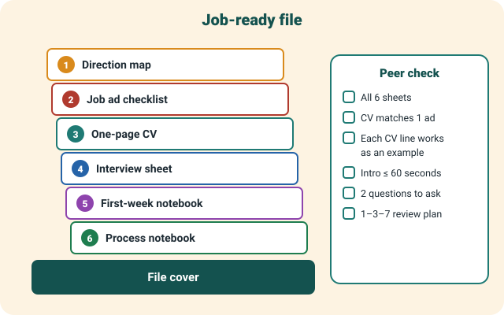

K7 · Self-directed learning and career development › Level 2 Starting
Review: Peer-check your Job-ready file and make a 30-day plan
The final lesson. You need the 6 sheets from Lessons 1–6 and a friend who is taking the course. Checklist template: Sheet 7.
1. Objectives
- Peer-check your Job-ready file with a 7-line checklist.
- Make a 30-day plan: applications to send, one test, a review schedule.
2. Retrieval warm-up
These questions are mixed from the whole course. Answer without looking, then open the answers.
- Which circles make up the three-circle map?
- Name the 3 signs to stop when reading a job ad.
- What is the formula for a CV line?
- What are the 3 points of a 60-second introduction?
- What are the 4 steps of the new-task learning loop?
Answers
- Like doing; can do, with evidence; real conditions. See Lesson 1.
- Very high pay for vague work; a request for money; a request to keep original documents. See Lesson 2.
- Verb + task + result, with a number if possible. See Lesson 3.
- Now; what you have done; why this place. See Lesson 4.
- Watch a demonstration; try it; write your own notes; test yourself. See Lesson 6.
3. Explanation
You have just answered questions mixed from several lessons. Mixing topics makes review harder than reviewing one lesson at a time. That difficulty usually helps you remember longer.
Why peer-check? When you read your own file, you skip errors because you are used to it. Someone else spots the vague parts at once. Swap files with a friend and score them against the checklist.

The 7-line checklist
- All 6 sheetsNo sheet left blank.
- EvidenceCircle 2 of the map has evidence.
- CV matches the adEach required item has one line.
- Can be toldYou pick 1 CV line; the owner tells it as STAR.
- 60 secondsSaid aloud, with a timer.
- 4-part messageOne sample message with all 4 parts.
- Review scheduleThe process notebook has 1–3–7 boxes.
How to give feedback in a peer check: name one thing done well, then point out at most 3 things to fix, each with an example. The receiver just writes them down and does not explain yet.
The 30-day plan. A file only helps if you use it. Write 3 lines:
- Apply: how many applications, for what kind of work, by which date.
- Test: one small test for the second direction on your map.
- Review: dates to review this course, ideally after 7 days and 30 days.
Once you are working, you can continue with the N3 path.
4. Workplace example
Hypothetical scenario. Mia and Leo are in the same study group. They swap files and peer-check them in 20 minutes.
Leo scores Mia's file: 6 of 7 lines met. Done well: her CV has clear numbers. To fix: Sheet 6 has no review boxes.
Mia scores Leo's file: 4 of 7 lines met. Mia picks the line "Designed a Google Sheets attendance tracker". Leo stumbles over the Result part. His introduction runs 95 seconds. Sheet 2 has only 1 job ad.
Leo's 30-day plan:
- Apply for 4 evening IT support roles by the 15th of next month.
- Test: talk to an older student who works in accounting.
- Review: revisit the course after 7 days and 30 days, with calendar reminders.
Why this works: the feedback is specific and limited to 3 points, so Leo knows what to fix first. The plan has numbers and dates, so progress can be checked.
5. Practice
Hypothetical scenario. You peer-check Nina's file. You find: her map says "good communicator" with no evidence. Her CV has the line "Good team player". Her introduction takes 2 minutes. Her sample message: "Hey, busy tomorrow." Sheet 6 has all the steps and a review schedule.
Write feedback for Nina: one thing done well, at most 3 things to fix, each with an example.
Hint 1
There are 4 weak spots, but choose only 3. Pick the ones that most affect getting an interview.
Hint 2
Each point to fix should include a sample rewrite, so Nina can follow it easily.
Model answer
- Done well: the process notebook has exact measures and a 1–3–7 review schedule.
- Fix 1: the CV line "Good team player" has no evidence. Try: "Shared out tasks for a 5-person course project, submitted on time, top grade in the class."
- Fix 2: a 2-minute introduction is too long. Keep the 3 points, 2 sentences each, and time it under 60 seconds.
- Fix 3: the message lacks a name, a shift and a request. Try: "Hi, it's Nina from the Thursday morning shift. I have a medical appointment tomorrow; could I swap shifts with Lucy? Thanks."
"Good communicator" on the map also needs evidence, but that can wait.
(Details are hypothetical, for illustration.)
6. Self-check
Choose an answer. Every option has an explanation.
Question 1. Review of Lesson 2. A job ad asks you to pay a "uniform fee" before you start. What kind of sign is this?
-
Not quite. Being asked to pay before starting is one of the 3 signs to stop.
-
Correct. Correct. Some countries ban it outright; Vietnam's Labour Code, for example, does.
-
Not quite. Professionalism shows in clear information, not in collecting money.
Question 2. Review of Lessons 3 and 4. The interviewer asks about a CV line you cannot explain. Where is the problem?
-
Not quite. Asking about your CV is normal in an interview.
-
Correct. Correct. Every CV line must work as an example when you are asked about it.
-
Not quite. The introduction has nothing to do with this CV line.
Question 3. When peer-checking your friend's file, you find 6 weak points. How should you give feedback?
-
Not quite. Too many points at once make it hard to know what to fix first.
-
Correct. Correct. A few specific points help the receiver fix things right away.
-
Not quite. Without points to fix, the peer check loses its purpose.
Question 4. Which line of a 30-day plan can be checked?
-
Not quite. There is no number and no deadline, so you cannot tell whether it is done.
-
Correct. Correct. It has a number, a type of work and a deadline.
-
Not quite. Waiting for an opportunity is not an action plan.
7. Reflection
- After the course, which sheet in your file do you feel most confident about? Which needs redoing?
- Which piece of your friend's feedback surprised you most?
8. Real-world application
In the next 7 days, fix the 3 points in your feedback. Send the first application in your 30-day plan. Schedule course reviews for 7 days and 30 days from now.
Once you are working, the lessons Split work in a group project and Use AI safely will help.
9. Metadata
| skill | K7 · Self-directed learning and career development |
|---|---|
| level | Level 2 · Starting |
| group | N2 |
| framework_map | WEF: Curiosity and lifelong learning; CSfW: 1a Manage career and work life; SkillsFuture CCS: Learning Agility; NACE: Career and Self-Development; LifeComp: L3 Managing learning (reference only) |
| original | Vietnamese version |
| updated | 2026-11-14 |
Finish the lesson
Mark it as done and the site suggests reviews after 1, 3 and 7 days. The data stays on your device only.
Suggested reviews: